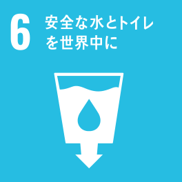
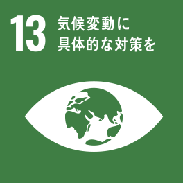
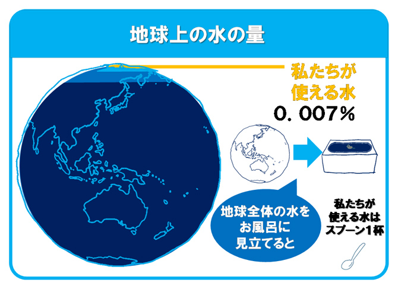
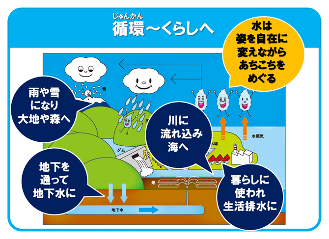
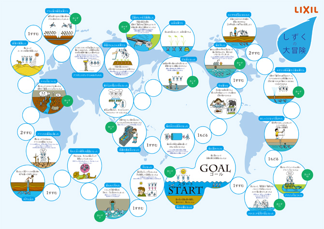
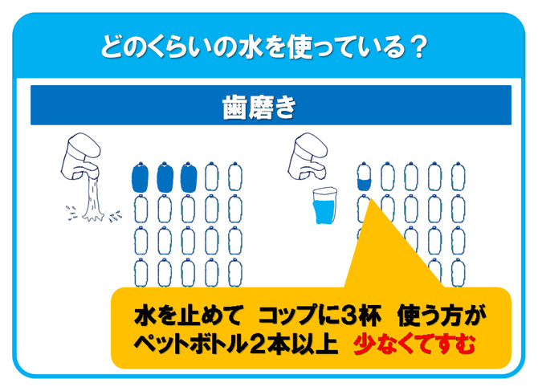
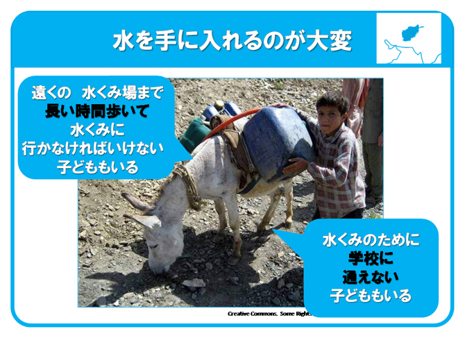
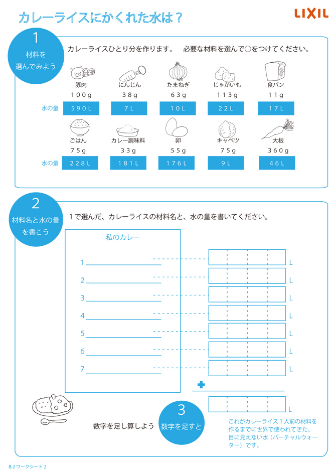
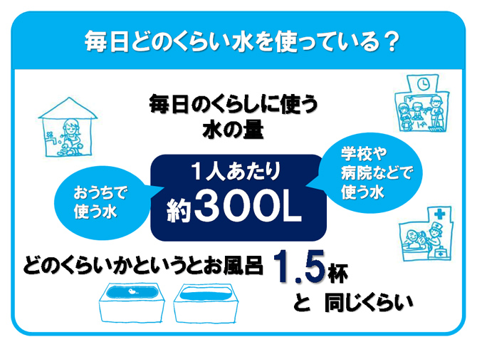

「21世紀は水の世紀」と言われ、水問題は世界の重要課題の一つです。
水の惑星と呼ばれる地球。しかしながら、私たちが使える水は全体の0.007％に過ぎず、何気なく食べている野菜や肉を収穫し育てるためには膨大な水が使われています。
トイレやお風呂等、水まわりの設備機器を取り扱うLIXILとして、水は限りある資源であることや、毎日の生活を通して水の大切さを子どもたちに伝える活動を行っています。
日本に暮らしながら、地球の水問題を自分たちの課題としてとらえることは簡単なことではありません。子どもたちが、「地球の一員として水を大切にしたい」と思う心を育てるため、この活動に取り組んでいます。
また、各事業所の従業員が授業の講師を務めることで、地域社会との関わりを深め、未来世代への責任について学び、貢献していくことを目指しています。
| 対象 | 小学校高学年（4～6年生） |
|---|---|
| 関連教科 | 理科・社会・総合的な学習の時間 |
| 授業時間 | 全2時限（45分×2コマ） |
| 教材 | オリジナルツールを用意。すごろく「しずくの大冒険」、ワークシート |
| 内容 |
|
| 関連するSDGsの目標 |  |
スライド教材 例
水の惑星と言われる地球のどこに水があるのかを考え、実際に直接使える水が非常に少ないことを知ってもらう。
固体から液体、気体へと変化する水の特徴を確認しながら、水が循環していることを伝える。
すごろくで一人ひとりが水の「しずく」となって、形を変えながら世界中を旅する。
ゲームを通して、それぞれの場所で水がどのように使われている、どんな状態なのかを学ぶ。日常生活で使う水の量について、ワークシートを使って考えてみる。たとえば、歯を磨くときに、コップを使うと、どれくらい節水できるのかを推測する。
世界には、水を遠くまで汲みに行くために、学校に通えない子どもたちがいること知り、水が不自由なく使えることが、当たり前ではないことを学ぶ。
カレーライスを例に、食物を作るために使われる水、バーチャルウォーターについて学び、海外でおこっている水不足も自分たちの生活につながっていることを知る。
一人一日300L使っている水を、どうすれば減らすことができるか、身近な節水方法について、グループでアイデアを出しあう。
2020年3月期は8校12回、617名に授業実施し、2010年からの10年間では、延べ165回、約7,600名の子どもたちが参加しています。
従業員自身が社会貢献活動として取り組むことはもちろん、世界の課題と自分の生活の繋がりを伝え、子どもたちが自ら考え行動できるように活動を続けていきます。